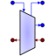

| g_in | Gas | IN | Inlet gas port | ||
| g_out | Gas | OUT | Outlet gas port | ||
| g_pr | Gas | OUT | Outlet primary gas port | ||
| sh_in | Shaft | IN | Input mechanical port | ||
| sh_out | Shaft | OUT | Output mechanical port |
| CG1 | REAL | 1 | Correction coefficient for corrected mass flow | - | |
| CG2 | REAL | 1 | Correction coefficient for efficiency | - | |
| CG4 | REAL | 1 | Correction coefficient for compression work | - | |
| DH_ratio | REAL | 0.9 | Scalar for primary flow compression work | - | |
| EPD_ratio | REAL | 0.9 | Scalar for primary flow efficiency | - | |
| F1 | TABLE_2D | Compression work (J/kg*K) vs adimensional speed (-) and beta parameter (-) | J/(kg·K) | ||
| F2 | TABLE_2D | Efficiency (-) vs adimensional speed (-) and beta parameter (-) | - | ||
| F3 | TABLE_2D | Corrected mass flow (kg/s) vs adimensional speed (-) and beta parameter (-) | kg/s | ||
| I | REAL | 10 | Inertial moment | kg·m^2 | |
| ND | REAL | 10000 | Design rotational speed | rpm |
| BPR | REAL | By pass ratio | - | ||
| DHQT | REAL | Compression work | J/(kg·K) | ||
| DHQTJ | REAL | Non scaled compression work | J/(kg·K) | ||
| DN | REAL | Derivative of rotational speed | rpm/s | ||
| EPD | REAL | Efficiency | - | ||
| EPDJ | REAL | Non scaled efficiency | - | ||
| N | REAL | Rotational speed | rpm | ||
| PCNR | REAL | Adimensional rotational speed | % | ||
| PQ | REAL | Pressure quotient | - | ||
| Power | REAL | Mechanical power | W | ||
| WR | REAL | Corrected Flow Rate | kg/s | ||
| WRJ | REAL | Non scaled corrected mass flow | kg/s | ||
| beta | REAL | 0.7 | Beta parameter | - | |
| delta | REAL | Adimensionalised inlet total pressure | - | ||
| theta | REAL | Adimensionalised inlet total temperature | - |
Document generated automatically (Date: 2019:01:23, Time: 00:20:12)